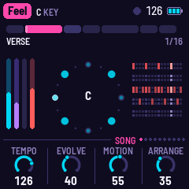
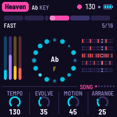

A generative electronic disco firmware for the M-VAVE FM-1
It's time to relive the futuristic electronic disco sounds of the '70s, '80s and '90s with GIO-1, new firmware for the M-VAVE FM-1. It is generative: it writes music in these styles as it plays. Pick a song, play along on the keys and let the lead answer you, drop in effects, and nudge it in the direction your feelings take you. Feel love and enjoy!



What plays
- Bass. An analog-style sequence out in front: two saws and a square through a four-pole ladder (or an FM voice), short decays, the dry note on one side and its echo on the other. Seven pattern shapes, written in chord degrees so they follow the changes.
- Pad. Strings, a choir or detuned saws on the chord, voice-led, through a slow stereo phaser.
- Lead. Ten voices, from Mini and Odyssey to Theremin, FM Brass and Robot. It writes its own phrases. Play the white keys and it follows your line, answers it, and makes it the song's theme.
- Drums. Four on the floor, claps on two and four, open hats off the beat, and syndrum fills.
- The form. Each song is a set of sections with their own chord changes. It loops for ever, repeating, skipping, dropping a layer, or moving the whole song up a key for a while. Sixteen drop-in effects are under your fingers.
Presets
Nine presets, each lovingly influenced by ground-breaking electronic disco hits:
- Feel126 BPM · C
- Gio113 BPM · A minor
- Mutant123 BPM · F minor
- Heaven130 BPM · A♭
- TickTock126 BPM · C, then E♭
- Energy123 BPM · C minor
- Fly126 BPM · A minor
- Lover130 BPM · C minor
- Express128 BPM · D minor
Thanks
Inspired by and modelled on AMB-1 by Charles Vestal, DUB-1 by Santiago Beguería and NACHTFAHRT by Cranky Man, and influenced by the music of Giorgio Moroder, Patrick Cowley, Marc Cerrone, Space, Daft Punk and many others. You are all giants, and I stand on your shoulders.
I'd like to give credit for sparking this idea to YouTube user @mateocarrion7776, who posted on a recent thread on my channel those immortal words, "My name is Giovanni Giorgio…", and set off this train of thought.